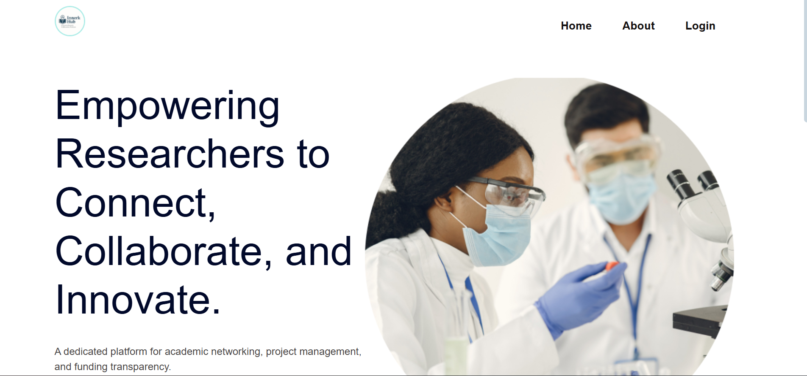
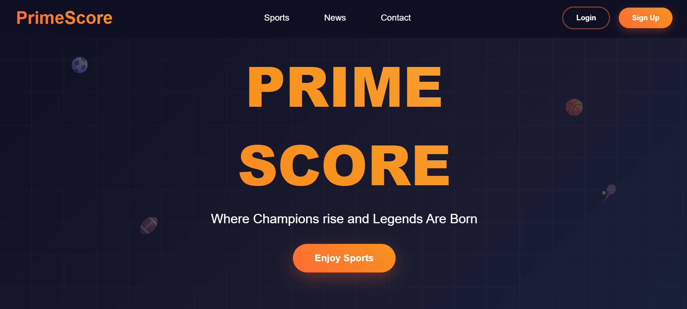

Featured Projects

Innerk Hub (A University Research Collaboration Platform)
A comprehensive platform designed to facilitate research collaboration among university students and faculty. Features include project management, researcher matching, and resource sharing capabilities.

PrimeScore (A Sports Live Feed Application)
A scoring and analytics application that provides comprehensive performance tracking and analysis. Built with modern web technologies and focuses on user experience and data visualization.
3D Flight Simulator Game
An interactive 3D flight simulation game built with JavaScript and Three.js. Features a stylized flying bus model, multiple levels, real-time stats tracking, and responsive controls with smooth UI transitions and game state management.
.jpg)
Financial Technology Solutions
Software testing and development contributions to financial solutions during internship at Mukuru Africa. Focused on improving user experience and system reliability in the FinTech sector.
.jpg)